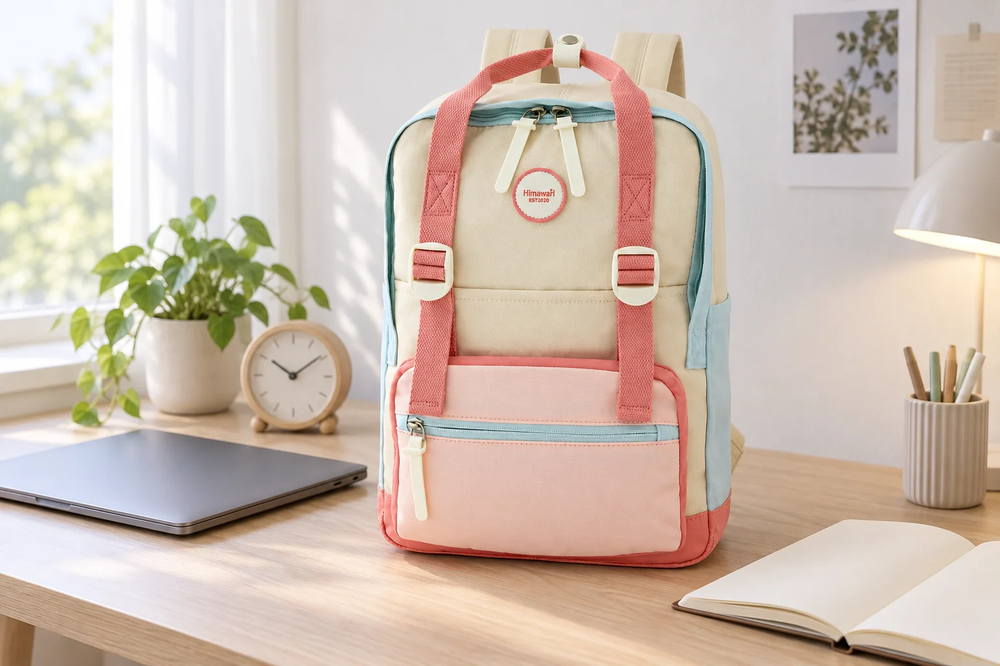
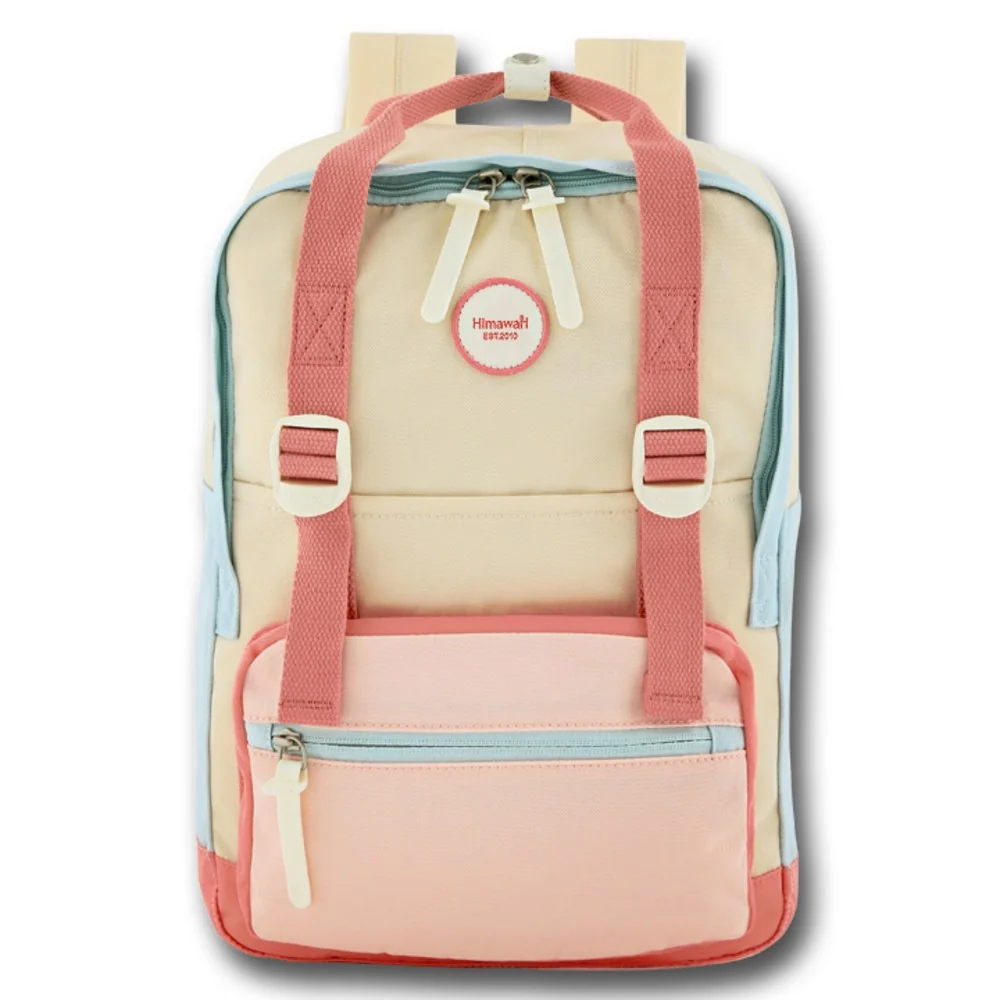

백팩을 책상 옆에 세워둘 때 필요한 자리

책상 옆과 벽 사이에 백팩 하나가 꼭 들어갈 만한 틈이 있습니다. 빈 가방은 들어가지만 노트북을 꺼낼 때마다 의자를 빼고 몸을 돌려야 할 수 있습니다. 하루를 시작할 때 가방이 놓였다는 확인과 일하는 동안 그 가방을 편하게 사용하는 일은 다릅니다. 책상 곁을 가방 자리로 정할 때에는 바닥에 닿는 모양에서 손으로 다시 집는 방향까지 이어서 봅니다.
먼저 그 자리를 얼마나 자주 쓸지 생각해봅니다. 도착해서 짐을 전부 꺼내고 퇴근 때만 다시 드는 사람이라면 가방 전체를 꺼낼 동작이 중요합니다. 기기와 자료를 몇 차례 되담는 사람에게는 놓은 상태에서 입구를 여는 일이 더 잦습니다. 같은 좁은 공간도 두 사람에게 다른 조건이 됩니다. 틈의 크기를 재기 전에 자기 백팩을 어느 시점에 다시 만지는지 떠올려볼 이유입니다.

가로와 폭을 바닥 위에 놓아보기
Himawari No.1088M 아이보리의 외부 크기는 가로 28 × 세로 41.5 × 폭 14cm로 안내되어 있습니다. 책상 옆 바닥을 생각할 때에는 가로와 앞뒤 폭이 출발점이 됩니다. 이 숫자는 제품의 바깥 규모를 비교하는 자료입니다. 짐이 든 상태의 정확한 바닥 면적이나 가방이 혼자 서 있는 성능을 확인한 값으로 읽을 수는 없습니다. 물건을 넣은 현재 몸체와 끈이 함께 놓일 자리를 별도로 봐야 합니다.
실제 제품 사진에는 위쪽의 두 손잡이와 둥글게 이어지는 몸체 윗선, 아래쪽 앞주머니가 보입니다. 손잡이는 몸체 위로 올라와 있어 가방이 놓인 높이와 손을 뻗는 높이가 같지는 않습니다. 책상 아래의 낮은 선반을 생각한다면 몸체 세로 길이만 맞추기보다 손이 들어갈 공간을 남깁니다. 어떤 고리에 걸 수 있는지는 별도의 사용 조건이므로, 보이는 손잡이를 책상 부품에 임의로 매다는 방식과 구별합니다.
바닥에 가방을 정면으로 놓을지 옆으로 놓을지도 비교할 수 있습니다. 정면을 의자 쪽으로 두면 앞쪽에 접근하는 길이 생기는 대신 가로 방향의 공간을 더 쓸 수 있습니다. 옆면을 보이게 돌리면 다른 방향에서 가방을 들어야 할 수 있습니다. 어느 쪽이 덜 차지하는지는 현재 짐을 넣은 형태에서 봅니다. 숫자 두 개의 위치만 바꾸어 놓는 것과 실제로 여밈을 여는 동작은 함께 확인해야 합니다.
앉기 전 넓었던 공간이 의자를 당겨 앉은 뒤에는 좁아질 수 있습니다. 의자의 바퀴나 다리가 백팩 끈 위로 지나갈 위치인지, 다리를 옮길 때 몸체를 계속 밀게 되는지 살펴봅니다. 가방을 더 깊이 밀어 넣으면 겉에서는 정돈되어 보일 수 있지만 다시 꺼낼 때에는 책상 아래로 몸을 숙여야 합니다. 보이지 않는 깊은 곳을 채우는 일과 매일 관리할 수 있는 자리를 만드는 일을 같은 목표로 두지 않습니다.
가방 본체는 안쪽에 놓였어도 긴 어깨끈이 의자 뒤로 남을 수 있습니다. 한 번 길게 펼쳐진 끈은 의자를 옮긴 다음에는 위치를 보기 어렵습니다. 내려놓을 때 끈을 본체 가까이 두고 어느 쪽으로 다시 멜지 정해봅니다. 끈을 몸체 아래에 끼워 억지로 고정하거나 연결부를 접어 넣는 방식보다 제품의 자연스러운 형태를 유지할 자리가 필요합니다. 의자가 움직이는 범위를 함께 본 뒤 보관 방향을 고를 수 있습니다.
여럿이 쓰는 책상에서는 옆자리의 발과 통로도 같은 바닥을 사용합니다. 내 의자 안쪽에서는 괜찮아 보여도 옆 사람이 일어나는 길과 겹칠 수 있습니다. 책상 전체의 빈 공간을 자기 가방 자리로 정하기보다 허용된 자기 자리 안에서 접근을 봅니다. 별도 짐 보관 위치가 마련되어 있다면 그 안내를 사용할 수 있습니다. 별도 보관 위치를 쓰면 책상 옆 공간은 의자와 발을 움직이는 자리로 남길 수 있습니다.
놓은 채 열 것인가, 꺼내서 열 것인가
백팩이 들어가는 틈과 입구가 움직이는 범위는 다릅니다. 윗부분을 열 때 책상 밑면에 손이 닿거나 큰 파일을 꺼낼 길이 없다면, 열기 전에 백팩을 바깥으로 옮기는 흐름이 더 단순할 수 있습니다. 그 경우에는 가방을 잠깐 받칠 허용된 자리도 필요합니다. 좁은 틈에서 지퍼만 열고 물건을 비스듬히 당기는 방법보다 전체를 꺼내 정상적인 방향으로 여는지 비교해봅니다.
가방을 자주 열어야 한다면 가장 먼저 꺼낼 물건의 높이도 봅니다. 휴대전화 하나를 찾는 일과 세로가 긴 파일을 꺼내는 일에는 다른 공간이 필요합니다. 작은 물건 때문에 큰 가방을 매번 들어 올리고 있다면 물건의 위치를 바꾸거나 가방 자리를 바꿀 수 있습니다. 작은 물건의 위치만 바꾸어도 가방 전체를 들어 올릴 횟수가 달라질 수 있습니다. 책상과 가방을 모두 옮기기 전에 자주 꺼낼 것의 경로를 비교합니다.
노트북이나 자료를 모두 꺼낸 뒤에는 몸체가 처음과 다른 모양으로 남을 수 있습니다. 빈 쪽이 접히며 넘어지는지, 옆의 벽에 기대는지 현재 상태를 봅니다. 어떤 가방이 자립하는지 외부 사진만 보고 정할 수는 없습니다. 자기 제품이 정상적으로 놓일 수 있는 면을 고르고 계속 쓰러진다면 다른 받침 위치를 택합니다. 안에 필요 없는 물건을 채워 모양을 세우는 방식보다 실제 보관 조건을 바꾸는 편이 목적에 맞습니다.
퇴근할 때에는 백팩을 꺼낼 길을 보며 의자와 주변 물건을 정리합니다. 들어갈 때 한 번 맞았던 틈이 하루 종일 그대로였다고 생각하지 않습니다. 가방을 다시 멜 방향으로 꺼낼 수 있고 끈이 의자 부품에 남지 않는지 보면 책상 옆 자리의 적합성을 판단할 수 있습니다. 다음날도 같은 위치를 쓸 계획이라면 가장 번거로웠던 한 동작을 기억해둡니다. 가방을 바꿀지, 놓는 방향을 바꿀지 선택할 근거가 그 자리에 남습니다.